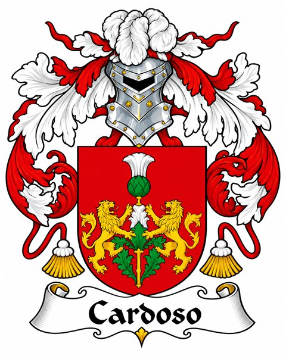

Para os cavalheiros
- Camisas de linho ou tecidos naturais
- Túnicas, coletes e capas
- Calças escuras e botas
- Cintos, broches e acessórios rústicos
Uma celebração da Casa Cardoso

Por ordem da nobre Casa Cardoso
Trinta primaveras completa a dama da Casa Cardoso, e vossa presença é requisitada para celebrá-las ao seu lado.
Não será banquete de reis nem festim de grandes salões, mas uma celebração singela, preparada de bom grado e com o coração aberto. O maior tesouro desta noite será a vossa companhia.
Preparai vossos trajes, pois os portões se abrirão para uma noite de alegria, encanto e celebração sob os costumes medievais.
Segundo decreto da Casa Cardoso
Nossa celebração será envolvida pela atmosfera da era medieval. Convidamos todos a entrar no espírito da corte com trajes inspirados na nobreza de outrora.
Alguns exemplos para inspirar vossos trajes. Tocai numa imagem para ampliá-la.
Uma paleta inspirada na nobreza medieval.
Não é necessário adquirir uma fantasia elaborada. Um detalhe, uma cor ou um acessório já será suficiente para honrar o espírito desta celebração.
Terceiro decreto da Casa Cardoso
Para que os preparativos sejam organizados com o devido cuidado, solicitamos que registreis vossa resposta à convocação.